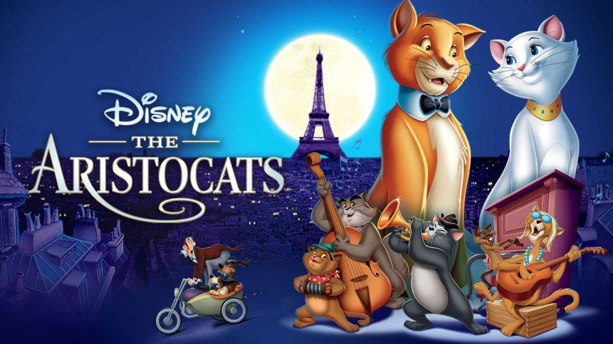

Is my favorite classic animated film produced by Walt Disney Productions. I love the music and the art it self.
Really cool superhero movie. The film offers a mix of high-stakes action, emotional moments, and witty dialogue.

Is a heartwarming and visually stunning animated film produced by Pixar Animation Studios. This film beautifully explores themes of family, love, and the importance of following one's dreams.